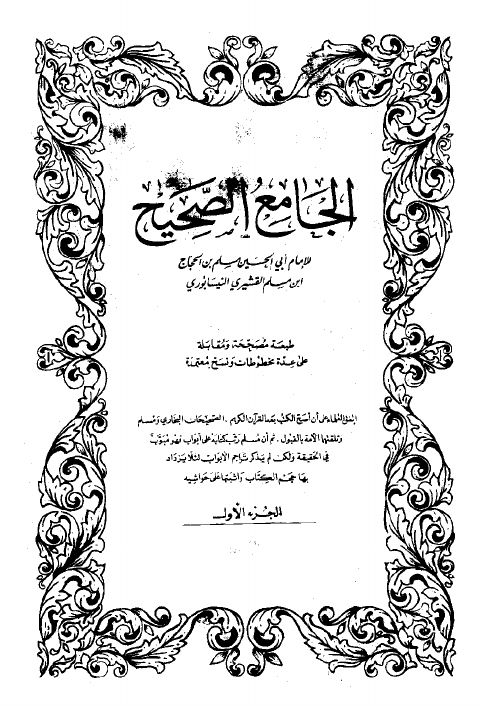

Publishers
المطبعة العامرة بإسطنبول
Publisher
Resources
الجامع الصحيح طبعة مصححة
الجامع الصحيح طبعة مصححة
مسلم بن الحجاج بن مسلم القشيري النيسابوري
صحيح مسلم -ط. العامرة- ت. ذهني
صحيح مسلم -ط. العامرة- ت. ذهني
مسلم بن الحجاج بن مسلم القشيري النيسابوري

صحيح مسلم ط العامرة تركيا، الجامع الصحيح
صحيح مسلم ط العامرة تركيا، الجامع الصحيح
مسلم بن الحجاج بن مسلم القشيري النيسابوري